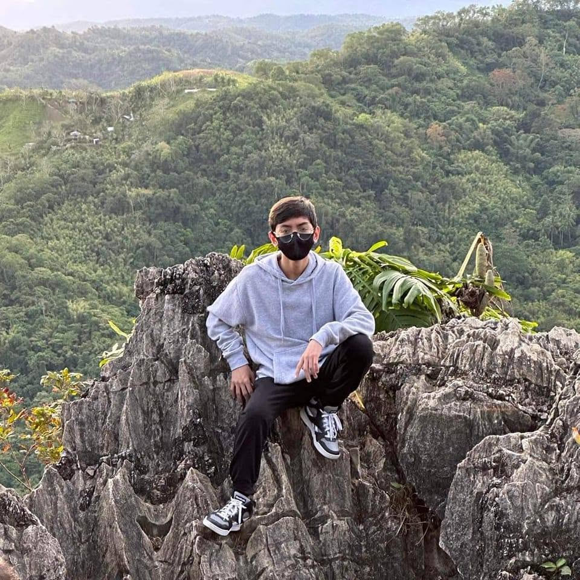

Curious at start. Committed by interest.

Something about me
I'm a student at UPHSD College of Computer Studies, Internet Technology – Game Development. I'm interested in games, technology, and learning how things work.
I'm taking things one step at a time, building my skills and hoping to create a game of my own someday.

Game music, and racing games
Listening to music while playing is one of my go-to activities before relaxing and doing anything that needs to be done in my schedule.
Wangan Midnight Maximum Tune 6RR is a fun game that brings out the chaotic side of people. Where smashing the wheel until the screen flickers black and the wheels rattle is the way to win races, as people say, “the first racing fighting game.” Rightfully so, although this game has tracks that are relaxing and make you feel the vibes of going out for a drive even if you're speeding and reaching up to 340–350 km/h.

Curiosity and childhood influences
It all started when I was a child and got introduced to Counter-Strike 1.6 and House of the Dead. They really piqued my interest in games from such a young age, and few other hobbies made me as interested as games.
As I went from middle school to today, my navigation and computer skills developed further than I could have imagined. I hope to keep honing the skills I've learned and someday make a game of my own.
Current skills
Taking it slow, no need to rush in learning things.
Python28%
HTML35%
CSS15%